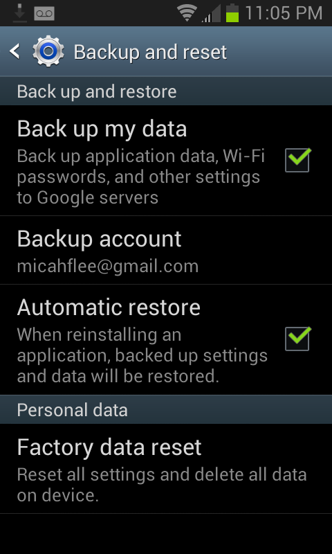

Use Android? You’re Probably Giving Google All Your Wifi Passwords
Go to your home screen, press the Menu button, select “Settings”, under “Personal” select “Backup and reset”. Is the “Back up my data” checkbox checked? If so, all of the wifi passwords that your phone remembers are being synced to your Google account.
And the passwords are in plaintext, too. When you format an Android phone and set it up on first run, after you login to your Google account and restore your backup, it immediately connects to wifi using a saved password. There’s no sort of password hash that your Android phone could send your router to authenticate besides the password itself.

Oh, and Google is part of NSA’s Prism program. If an NSA analyst, or likely someone from CIA or even FBI (Prism is a “team sport”), asks Google for information about you, your house’s and office’s wifi passwords are likely included in that data. Without a warrant.
With your home wifi password, an attacker can sniff wifi traffic outside your house (without connecting to your network) and then decrypt it all, passively eavesdropping on your private network. If the attacker wants to do more active attacks, they can connect to your wifi network and mount a man-in-the-middle attack to eavesdrop on and modify any unencrypted Internet traffic. If you download a file, they can serve you a malicious version instead. An attacker can scan for computers, phones, and tablets that are connected to your network, scan for open ports, and exploit vulnerable services. If you have a computer connected to your network that you haven’t done software updates on for a couple weeks, or that you’ve never configured a firewall on, or that you’ve installed random servers on and have never touched them since, there’s a good chance the attacker could take over those computers.
Anyway, maybe you should uncheck that box. Google says that they’ll delete this data when you stop backing it up with them.

Although it wouldn’t hurt to change your wifi password anyway.
Update: I have filed a feature request in Android’s bug tracker to offer encrypted backups, similar to the password sync options offered by Chrome and Firefox.
Update 2: The Android bug tracker isn’t the correct place to ask Google to fix this bug. The backup/restore feature is part of the proprietary Google apps for Android, not the open source Android project. This thread on the Google product forums is the correct place.